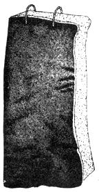

More From The Morton Salt Book
Here's the third installment of Morton Salt's superior booklet, A Complete Guide To Home Meat Curing. MOTHER No. 18 told you how to cut and cure pork. This section takes you the rest of the way through preserving pork and into curing poultry.
By the Mother Earth News editors
January/February 1973
OK, Homesteaders . . . here's the third installment of Morton Salt's superior booklet, A COMPLETE GUIDE TO HOME MEAT CURING. MOTHER NO. 18 told you how to cut and cure pork. This section takes you the rest of the way through preserving pork and into curing poultry.
We'll be serializing more from the Morton Salt handbook in future issues . . . but we still advise you to drop $1.25 into the mail and add the manual to your farmstead bookshelf right now. It's packed with valuable information on butchering cutting up and curing pork, beef, veal, lamb, poultry and wild game. Get your copy from Morton Salt Company, P.O. Box 355, Argo, Illinois 60501.
Again, our special thanks to Murray J. Pearthree, Morton Salt Regional Sales Manager, for granting us written permission to reprint from the booklet.
» ham
BONING AND ROLLING A HAM Boning a Ham: Lay ham skin side down with butt end toward you. With boning knife remove meat from around aitch bone and disjoint aitch bone from straight leg bone. Then remove entire leg bone and shank bones by cutting through top of ham along these bones and trimming around them. When the bones have been removed, mold ham back into shape, and tie with heavy white cord. The cord should be tied around the ham crosswise about every inch.
» canadian bacon
SEPARATING LOIN FROM BACKBONE FOR CURING CANADIAN STYLE BACON


A delight to the palate and a treat that you can now enjoy. Canadian Style Bacon is one of the highest quality and most delicious pork cuts that you can cure. It is made by curing the loins then tightly wrapping them,
Few people who do not raise their own meat and do their own curing can afford to eat this tasty delicacy.
Canadian Style Bacon is not only delicious. but it keeps well and once you try it you will always want a supply of these sweet, juicy cured loins along with your hams, shoulders, and regular bacon.
You can use either the Dry Cure or the Sweet Pickle Cure with Morton Tender-Quick. The Sweet Pickle Cure is generally preferred.
Trim loins from bacon sides. Then trim as shown on opposite page and cut them in half in order to get them in a small crock for the Pickle Cure, or a medium size box for the Dry Cure.
DIRECTIONS FOR THE SWEET PICKLE CURE Pack the loins in a stone crock, standing them on end if the crock is not wide enough to lay them down. Make a curing pickle by mixing at the rate of 2 lbs. Tender-Quick per gallon of water. The water should first be boiled and allowed to cool. Stir the pickle until all of the Tender-Quick dissolves, then pour the TenderQuick curing pickle over the loins until they are fully covered, and weight them down with is clean stone or other weight to keep them below the pickle.
Overhaul the loins and change the position of the pieces after they have been in cure about 5 days. Loins from average size hogs should remain in cure for about 2 weeks. When cured. remove the loins from the pickle, soak in tepid water fog about 30 minutes and wash. Then let the loin dry thoroughly. After they are dry. rub liberally with a mixture of corn meal and black or red pepper. and wrap each loin separately in muslin or other clean cloth. The cloth should be a few inches longer than the loin. Make a tight roll and gather the cloth at one end and tie tightly with a string. Then make half hitch loops around the wrapped loin about every 1 1/2" to the other end and tie, leaving enough string for hanging up the loins. Before wrapping, the loins may be hung and given a light smoke, especially if loins me to be kept for some time.
DIRECTIONS FOR DRY CURE For the dry cure, use Tender-Quick at the rate of 6 lbs. Tender-Quick per 100 lbs. of loins. First rub the meat with 1/3 of the Tender-Quick, then in 2 or 3 hours rub on the second 1/3 and in 24 hours apply the balance. Pack the loins closely while in cure and overhaul once when the curing time is about halt up, changing the position of the pieces.
Leave the pieces in cure for 10 days to two weeks. When taken from the cure, wash the loins, let them dry thoroughly, and rub with cornmeal and pepper. Wrap in muslin the same as for the sweet pickle cure.
Complete the cut by trimming close to the bones. The loin and backbone are shown separated below.
» box cure bacon
The box cure will help you
turn out firm, mild cured bacon
with an appetizing flavor.
Select well streaked medium thick bellies and trim the edges and ends square, leaving the belly ,just large enough to fit flat inside the box to be used.
After the bellies have been chilled and trimmed, use Morton Sugar Cure at the rate of 4 lbs. per 100 lbs. of bellies. Rub the bellies well with the Sugar Cure on both the rind and flesh sides. Sprinkle a little Cure over the bottom of the box and pack the first belly in skin side down. Lightly tamp the belly with a wooden block in order to flatten it out and remove any air pockets underneath. Then pack the other bellies in skin side down, except the top one which should be skin side up. Tamp each belly as it is packed, in order to smooth out the meat and eliminate air pockets. Sprinkle a little Cure over the last belly when it is packed in. The bellies should be trimmed as near the size of the box as it is practical to cut them.
Close the top of the box so that it presses down can the bellies. Leave the meat in the box until cured. The curing time should be figured about 1 1/2 days per pound; for example, an 8 lb. belly 12 days.
When curing time is up, remove the bacon sides and let them soak in lukewarm water for about thirty minutes and then wash them. A bristle brush is convenient for washing. After washing, hang the bacon until the pieces are thoroughly dry, and wrap for future use.
BOX CURE WITH TENDER-QUICK Follow the same general directions as above using about 3 to 3 1/2 lbs. of Tender-Quick per 100 lbs. of bellies. This will make an extra mild cure and give the bacon a new delicious and tempting flavor.
BOX FOR CURING The box should be strongly made and should be water tight. Hard wood, such as oak or maple, is the best material to use. The size should be approximately the length and width of the bacon bellies about 10" wide and 20" long. The height can be determined by the number of bellies to be cured at one time. A box about 24" high will hold the bellies from five or six hogs.
The top can be made in order to fit just inside of the box to be held down by a weight or hinged onto the box, and when hinged an extra slat tray should be made to place on top of the meat in order that the box top will press the tray against the meat and hold it under pressure while curing. The pressure should be firm but not heavy.
» rendering lard
For white, creamy lard of high quality the lard stock should be trimmed and rendered as soon as possible after the carcass is cooled out.
Breaking down processes in fat start very quickly, which lowers the cooking and keeping qualities of the lard if rendering is delayed too long. If the hogs were well scalded and scraped, the skin may be left on the lard stock. The leaf fat makes the finest lard, but ordinarily the leaf fat, back fat, and fat trimmings are rendered together.
The caul and ruffle fats from the offal yield a darker product than the other fats and should be rendered separately, if they are to be used for lard. If the offal fat has been removed carefully, washed and chilled promptly, it should have an acceptable odor and flavor, but ordinarily it is better to use the caul and ruffle fats in soap making rather than in lard.
CUT FAT IN SMALL PIECES Lard will render more rapidly sand completely if it is cut into small pieces. Cut the lard in thin strips or run it through a meat chopper using a two or three blade knife and plate with holes 3/4" or larger.
A little water should be in the rendering kettle when the fat is clumped in. The kettle should not be too full or it will boil over. A pinch of baking soda added to the fat when rendering is begun will darken the cracklings but whiten the lard.
DO NOT SCORCH Render over a rnedium fire to prevent sticking and scorching. The far should be stirred frequently and the fire watched during the entire rendering process. Cooking should be very slow until the fat has begun to melt and the mass can be stirred freely in the kettle. At the beginning of the process, the temperature of rendering lard will be about 212°F. As the water contained in the fat tissues evaporates. the temperature will rise slowly until it reaches 245 to 255°, which is as high as it should be allowed to go. As rendering proceeds, the cracklings will brown and float. When they arc more completely rendered, they will gradually sink to the bottom. Care should be taken at this point to prevent small particles of dried out cracklings from scorching, on the bottom of the kettle. The rendering may be stopped when the cracklings are still floating. The more complete rendering, however, removes a greater proportion of the moisture, thus producing lard that will keep better.
It is advisable to allow the rendered lard to settle and cool slightly before emptying the kettle. The liquid hard containing the cracklings should be put through a lard press. This improves the quality of the lard and increases the quantity. The lard will be whiter if it is stirred after it comes from the press until it has a creamy consistency. A method often used to whiten lard is to put in a potato while it is being stirred, leaving the potato in long enough to absorb some of the impurities.
STORING LARD The warm lard should be put into cans or containers and stored immediately at a temperature near or below freezing. This will allow it to chill rapidly enough to produce a fine grain. Lard becomes rancid through exposure to the air and one good method of keeping lard is to seal it in tin cans where light and air can be kept completely away and where the quantity in each can may be used up in a few days. Lard should be stored in a cool, dark place. Knowing that you have stored away for future use a full supply of sweet, firm lard is one of the satisfactions of home butchering.
Leaf fat will yield 90 to 93% of its weight in rendered lard. A combination of leaf fat, back fat, and cutting fat will yield from 80 to 85%. Offal fat yields about 55 to 65%. If moisture has been eliminated from the lard by thorough rendering, no water souring should develop during storage.
LARD HAS MANY USES Good lard has so many uses, is so digestible, and forms a foundation for so many tasty dishes that it pays to render and store it with extreme care. Lard is a very economical fat. Since it is 100% fat it requires only about 3/4 as much lard for shortening as it does lard substitutes. Lard is easily digested because it is one of the softer fats, and the softer and more fluid a fat is, the more easily it can be digested. Lard has a high nutritive value and improves the flavor of biscuits, light breads, pastries, fried foods, cakes, and cookies. When lard is used for deep fat frying, a deep fat thermometer should be used to get the correct temperature. By preventing overheating it will help increase the frying life of the lard.
STRAINING USED LARD After lard is used, it should be strained through cheesecloth to remove any food particles which accumulate. If strong flavored foods. such as fish and onions, have been fried in lard, slices of potato should be cooked in it to remove the flavor. Cut them directly into the cold lard and heat gradually until the slices are well browned and then strain the warm lard.
Light, air and moisture coming in contact with lard starts deterioration. Avoid digging down into your lard supply if it is packed in large cans. It is better to scrape off the amount you want from the entire top surface, keeping the main body of lard level in the can.
• Lard is easily digested.
• It provides energy.
• It's the ideal shortening for bread-making-it improves the flavor and color and gives it a desirable crust.
» fat back
DRY CURED AND PEPPERED Fat backs can be used for making lard or cured and held for seasoning when cooking. For curing fat backs as soon as they are chilled and trimmed rub them well with Sugar Cure, using at the rate of 8 lbs. for 100 lbs. of fat backs. Pack them in a curing box and let them remain in cure two days per pound. Overhaul and change the position of the pieces after the curing time is about one-half up. When the fat backs are taken from the cure, soak in lukewarm water for about 30 minutes and wash off the surplus salt with a brush and let them dry. When dry, rub a mixture of black and red pepper over the entire surface of the meat, both skin and fat sides, then wrap and hang away for future use.
» keeping the trimmings
At butchering time, you always have a surplus of trimmings and small pieces that you cannot conveniently use up fresh in a short time, and the press of other work makes it inconvenient to immediately make these into sausage, head cheese, or other meat products that can be kept.
Haven't you always wanted a simple, easy way to take care of the spare ribs, backbone, neck bone, feet, heart, liver, tongue, etc. until you had time to use them just as you wanted to?
Now you can keep these pieces until you are ready to use them. All you need is Morton's Tender-Quick, a stone crock, and water.
PUT ALL OF THE PIECES IN A TENDER-QUICK PICKLE For making the Tender-Quick pickle, mix at the rate of 2 lbs. Tender-Quick per gallon of water. Stir the pickle until the Tender-Quick dissolves. The water should first be boiled and allowed to cool.
Place all the pieces in a stone crock and pour the Tender-Quick pickle over them until the pieces are fully covered. Weight the pieces down to keep them below the pickle.
As you need the spare ribs or any other pieces, you can take them from the Tender-Quick pickle, wash them of in fresh water and cook them just as you normally would. The different pieces can stay in the crock until you are ready to use them, and even the bony pieces, such as the backbone and spare ribs, which have only a thin layer of meat on them, will be delicious.
Tender-Quick is an amazing meat cure, made by a special process. It gives the meat a delicious flavor but prevents it from becoming hard, dry, or over-cured.
A Tender-Quick pickle is such a convenient way to keep the surplus pieces that once you have tried it you will never want to be without it. It is a time saver and helps you avoid overwork during the butchering and lard making season.
TENDER-QUICK PREVENTS WASTE When two or three hogs are butchered at the same time, there are so many tasty pieces to be eaten up soon-such as Frenched tenderloin, that many of the other smaller cuts are apt to go to waste before you can get around to eating them. Tender-Quick will help you prevent this loss.
TENDER-QUICK SAVES RUSH The heads and trimmings can be quickly cleaned and put in a Tender-Quick pickle and held until it is convenient for you to use them. Tender-Quick makes canning a pleasure. No longer it is necessary to remain steadily on the job hour after hour at canning time in order to get the meat canned right away. Beef, lamb, and poultry can all be cleaned and kept in a Tender-Quick pickle and canned at your leisure.
» making the sausage
MORTON MEAT, POULTRY AND SAUSAGE SEASONING ELIMINATES GUESSWORK Morton Meat, Poultry and Sausage Seasoning is a complex mixture containing the finest spices, sage, peppers, and other seasoning ingredients blended with salt in exactly the right proportions to make the most delicious sausage you ever tasted. It is ready to use just as you receive it.
You do not have to guess, mix or add any ingredients. This Seasoning that is prepared for you is easier to use, it saves time and disappointments, and enables you to get the same original delicious flavor- the same tempting taste every time.
Use 8 oz. for seasoning 24 lbs. of meat if you like well seasoned sausage. If you prefer mild seasoned sausage, use an 8 oz. can for 32 lbs. of meat. For small quantities (well seasoned) use one level tablespoon of Seasoning for each pound of meat.
TRIMMING MEAT Use fresh pork trimmings and any part of the shoulders, loin, etc., depending on the amount of sausage you wish to make. Trim all of the meat from the bones and trim out all gristle and blood clots. Cut the meat in strips and then cross cut these strips to make, small squares. Cut the fat meat in the same size squares and keep fat and lean separate.
WEIGHING THE MEAT After the meat is cut in squares, weigh the fat and lean meat separately. Then mix together, putting in one-third fat and two-thirds lean. (Some prefer one-fourth fat and three-fourths lean.) If shoulders and a large amount of lean meat are used, and if more fat is needed, cut up strips of the back fat.
MIXING WITH SEASONING After the meat is weighed, mix the fat and lean together and spread out in a pan or on wax paper and sprinkle Morton Meat, Poultry and Sausage Seasoning over it, using the proper amount of Seasoning for the total amount of meat. Then, mix Seasoning and meat together before grinding.
GRINDING As the meat is ground, the Seasoning will be thoroughly mixed and blended with it. For the nicest sausage the meat should be cold when it is trimmed and also cold when ground.
When grinding, you have a choice of coarse or fine cut sausage. For coarse cut sausage run it through the chopper once, using a cutting plate with standard 3/16" holes. For fine cut sausage run the meat through the chopper twice, the first time using a cutting plate with large 3/8" holes and the second time using a plate with the standard 3/16" holes. (If an extra fine cut is desired, a 1/8" hole plate may be used for the second grinding.)
Where sausage is run through the grinder twice, it should stand over night in a cold place between the first and second grindings. This will prevent the meat from becoming heated by being ground twice in succession. It also permits the Seasoning to work through the sausage, insuring a better flavor.
The cutting knife and plate on the grinder should be kept sharp and clean, as quality sausage cannot be made with a dull knife and plate as it will crush out the meat juices. The meat should be cold and the knife and plate sharp.
After grinding, let the sausage stand over night in a cold place before putting away for future use.
KEEPING SAUSAGE Small quantities of sausage for immediate use may be kept in a crock or jar where it is cool. For keeping over a longer period of time, sausage may be made into patties partially fried down, placed in stone crocks and covered with melted lard.
SAUSAGE CASINGS Pork casings are excellent for stuffing sausage when properly cleaned and turned. Muslin casings are also good and can easily be made by stitching strips of muslin to form bags about 2 to 2 1/2" in diameter and about 15" long. Muslin casings should be dipped in water and wrung out before they are used.
STUFFING Attach stuffer spout and force enough sausage into the spout to fill it to prevent air pockets. Slip casing over the spout and feed on as much casing as the spout will hold. If muslin casing is used, pull the closed end of the casing up tightly against the end of the stuffing spout. This will prevent formation of air pockets in the sausage.
While sausage is being stuffed, press upward very lightly with the finger at the end of the stuffer. This will raise the stuffed casing above the end of the stuffer and will pack the casing more tightly, helping prevent air pockets. After stuffing, tie the ends of casing with strong twine.
To give stuffed sausage added flavor and better keeping qualities, rub the casings liberally with Sugar-Cure after they are stuffed and ready to hang away.
CURED PORK SAUSAGE For making cured pork sausage, cut the meat in squares just the same as for fresh sausage, and put the meat in a Tender-Quick curing pickle. Leave the meat in the pickle three days, then take it out, season, grind, and stuff just the same as for fresh sausage. Use 2 lbs. Tender-Quick per gallon of water for making the curing pickle.
MUTTON AND PORK SAUSAGE A very tasty sausage can be made by mixing 2 parts of lamb or mutton with one part of fat pork and one part of lean pork. Cut the mutton and pork in squares, mix, season, and grind just the same as for fresh pork sausage.
BEEF AND PORK SAUSAGE A favorite type of sausage with many is a mixture of beef and pork. A good proportion to use is 2 lbs. of lean beef with 2 lbs. of lean pork to 1 lb. of fat pork.
Cut the meat, season, and grind just the as for making fresh pork sausage.
A GOOD SAUSAGE GRINDER WITH STUFFER SPOUT Different size plate makes it easy to put up sausage. Size of plates pictured below: 3/4, 3/8, 3/16 and 1/8 inch holes.
There are many delicious types and kinds of sausage that can be made with beef and pork. Any clean cuts of meat can be used, and different combinations of meat and seasonings used to suit individual tastes. Tender-Quick cures faster than regular salt, brings out a pleasing rich color, and intensifies the natural flavors of the meat.
BOLOGNA SAUSAGE Excellent bologna sausage can be made by combining one part pork, with 1 1/2 parts beef: For example, 10 lbs. pork and 15 lbs. beef, or 40 lbs, pork and 60 lbs. beef. The following recipe is based on the larger quantity, which would make a total of 100 lbs of meat.
60 lbs. beef trimmings
40 lbs. pork trimmings
3 lbs. Tender-Quick
3 to 4 oz. black pepper
1 1/2 oz. coriander
1 oz. mace
Onions if desired.
Mix 2 lbs. Tender-Quick with the 60 lbs. chilled beef trimmings and grind, using the coarse grind ing plate. After grinding, spread the meat in a cool place and let it cure for 48 hours. Grind the 40 lbs. chilled pork trimmings with 1 lb. Tender-Quick and let cure. After 48 hours, regrind the cured beef, using 1/8" hole plate.
Then add the pork and grind the mixture again. Add the seasoning and mix thoroughly. A small amount of water will help to mix. 30 to 40 minutes is not too long for thorough mixing. Stuff the sausage tightly into beef or muslin casings and allow to hang in a cool place over night. Then hang the sausage in a smokehouse heated to 110 to 120° and smoke to a rich brown color, about 2 or 3 hours.
Put the hot smoked sausage immediately into water heated to 160-175° F. and cook until they float or squeak when the pressure of the thumb and finger on the casings is suddenly released. The cooking time ranges from 20 to 90 minutes, depending on the size of the casings. Plunge the cooked sausage into cold water to chill. Hang in a cool, dry place for future use.
SUMMER SAUSAGE Summer Sausage is a hard, dry sausage that is highly seasoned and will keep for a long time if stored in a dry place where it does not mold. A good Summer Sausage is made as follows
20 lbs. lean beef
10 lbs. lean pork Cut the meat into small pieces and thoroughly mix pork with the beef. Then grind it once, using a plate with 3/16" holes. After the grinding, spread out the meat and add the following seasonings uniformly: 1 lb. Tender-Quick
2 1/2 oz. finely ground black pepper
2 1/2 oz. sage
1 oz. cane sugar
1/2 oz. whole white pepper
Garlic finely ground if desired.
Thoroughly mix the seasoning by kneading it into the meat, and regrind, using a plate with holes, until the meat has been ground very fine. After the meat is seasoned and ground, spread it on wax paper in a cool, dry place for 3 or 4 days. Then stuff into casings and tie into 15 or 20" lengths. Rub the casings liberally with Sugar-Cure. Hang up and allow to dry and age for some time before using. Summer Sausage may be smoked in a cool smoke if desired.
FRANKFURTERS Frankfurter sausages are a great favorite and are also known as wienies or Vienna Sausage, depending on the size and style of casings used.
The recommended proportions of beef and pork are two parts of lean beef to one part of fat pork. This may be varied to suit individual tastes. For making 30 Ibs. of frankfurters, use the following recipe.
20 lbs. lean beef
10 lbs. fat pork
1 lb. Tender-Quick
3 oz. black pepper
1 1/2 oz. mace or sage finely ground
Garlic or onions go well in frankfurters and can be added if desired.
Mix the Tender-Quick and seasoning together, then thoroughly mix with the chopped meat and run through the grinder, using fine plate. Grind two or three times to make sure the. seasoning is evenly distributed and that the meat is ground very fine. After grinding, stuff in sheep or hog casings, depending on whether you want lard or small frankfurters,
After stuffing, hang in a smokehouse and smoke until a rich, orange color. Then cook in water heated to 155° until they float. Cooking time depends upon the thickness of the frankfurters. Do not have the water much hotter than 155° or the casings may burst. After cooking, rinse the frankfurters in hot water to remove grease. Use frankfurters soon after making or can them for keeping over a long period.
WESTPHALIAN STYLE SAUSAGE This a very coarse cut type sausage made from pork. The meat from the neck, shank and trimmings good for this style sausage. Use about three parts t lean pork and one part fat. Grind the meat through a coarse plate with 3/8 " holes, or chop with butcher knife. Then mix the meat with Tender-Quick black pepper and cloves to taste.
When thoroughly mixed, stuff into casings and hang in a cool place to dry for 48 hours. Then smoke from 4 to 6 hours to a light mahogany color. Then store in a cool, dry place.
LIVER SAUSAGE For making liver sausage cook the head meat, tongues, heart, skins, and other trimmings until the meat can be removed easily from the bones. Do not cook quite so long as when cooking head meat trimmings for making head cheese.
Next, remove all blood vessels from hog livers and cut livers deeply with knife so that they can be thoroughly scalded by putting in scalding water for about 10 minutes. For 10 lbs. of finished liver sausage, use 8 to 8 1/2 lbs. of head meat and the other pork trimmings and 1 1/2 to 2 lbs. of liver. Grind all the cooked meats and livers using plate with 3/16 or 1/4" holes.
To the ground meat add enough of the liquor from the cooked trimmings to give it a soft but not wet texture. Add to the 10 lbs. of mixture 4 oz. Tender-Quick, 1/2 oz, black pepper, small quantity of sage, red pepper and allspice to taste.
Stuff into casings and simmer in hot water until it floats, which requires 15 to 30 minutes After cooking, plunge into cold water and chill thoroughly. Hang in a cool place to drain. Liver sausage should be used up in a short time after it is made unless it is cooked or covered with melted lard.
HEAD CHEESE Head cheese and scrapple can be made from fresh meat or from cured meat. When cured meat is used, the finished product will have a nicer color, superior flavor, and will keep considerably longer.
Split and clean up the head thoroughly, removing eyes, ear drums, and nasal passages, and chop off the teeth. Put the cleaned bony pieces containing the meat, along with other meats you wish to use, such as parts of the heart, tail, tongue, feet or trimmings, into a Tender-Quick curing pickle made at the rate of 2 lbs. Tender- Quick per gallon of water. Leave the meat in the pickle about a week, then wash the pieces in fresh water. Place the meat in a pan with water and simmer until the meat can easily be separated from the bones. Dip off the liquid and remove all bones from the meat and chop the meat fine or run through the grinder, using a coarse plate, about 3/8" holes.
Season the meat to taste with black and red pepper, ground cloves, coriander and sweet marjoram. Add salt if desired. After seasoning, return the meat to the kettle, cover with the liquid that was dipped off and boil about 15 minutes longer.
Pour the mixture into a shallow pan, cover with a cheesecloth and weight down. When cool, slice and serve without further preparation.
If it is desired to stuff' the head cheese into casings, this should be done after seasoning and before the second cooking. The stuffed head cheese should then be placed in the remaining liquid and simmered until it floats. Then take out, chill and hang away.
SCRAPPLE Scrapple is a very popular breakfast dish. It is made of cooked pork mixed with the liquor thickened with cornmeal, or flour, or sometimes both.
Cook head meat, hearts, trimmings, etc., until bones can be removed easily. Cook skin, if used, until tender. When cooked, grind all the meat through a fine chopper plate (1/8" or 3/16" holes). Strain liquor to remove small bones, return ground meat to the liquor and bring to a boil.
The mixture of cereals to be added varies according to individual taste. All cornmeal, or 3 parts cornmeal and 1 part flour is generally used.
A rich, full-flavored scrapple can be made by using 4 parts meat to 3 parts liquor and 1 part dry cereal (by weight). More liquor and cereal may be added as desired.
First moisten cereal with some of the cool liquor so that lumps will not be formed when added to the hot meat. Add to mixture of meat and liquor.
Boil for about 1/2 hour, stirring frequently to prevent sticking. Shortly before cooking is finished, add seasoning and stir in well.
The following seasoning may be used for each 10 pounds of meat:
| 3 ounces Morton Salt | 1 /4 to 1/2 ounce sage |
| 1/4 to 1/2 ounce black pepper | 3 ounces ground onions |
| 1/4 to 1/2 ounce sweet marjoram | Small quantities red pepper, nutmeg, mace |
PANHAS Panhas is a cornmeal loaf that is made by adding cornmeal to the liquor that is left after cooking meat for head cheese, liver sausage, or scrapple.
Bring the liquor to a boil and add cornmeal slowly so that no lumps are formed. Add sufficient cornmeal to form a thick paste. Season to taste with salt, black pepper, small quantities of cloves, coriander, and sweet marjoram. Cook for 30 to 40 minutes, stirring frequently to prevent scorching. Pour into shallow pans, slice and fry like scrapple.
PIGS FEET Clean the feet thoroughly. The toes and dewclaws should have been removed when the carcass was dressed. The glandular tissue between the toes should be trimmed out and all hair and dirt removed. After the feet an cleaned and chilled, cure in a Tender-Quick pickle made with 2 lbs. of Tender-Quick per gallon of water. Leave the feet in cure a week to ten days. Take them out and wash thoroughly and simmer slowly until done. Cook the feet slowly enough so that the skin will not part too readily and the feet pull out of shape. After cooking, chill the feet and pack into a tight vessel, stone jar, preferred, and cover with hot spiced vinegar. Late the feet can be served cold or fried in a batter of eggs, flour, milk, and butter.
BLOOD SAUSAGE It is easy to make good blood sausage.
3 gallons hog's blood
7 lbs. beef hearts and trimmings (Beef trimmings may be used if enough hearts and tongues are not available)
2 1/2 lbs. fat pork
1/2 lb. Tender-Quick
1 oz. black pepper
Onions and mace may also be used.
To prepare the blood, stir it constantly while it is being collected until you have removed all the stringy fibres, leaving only the red liquid.
Cook the beef and the pork together for above a half hour. Then remove from the fire and put the beef through a grinder, using plate with 1/8" holes.
Cut the pork into small pieces and mix with the ground beef.
Then stir in 4 oz. of Tender-Quick, and stir the meat into the cold blood and add the reminder of the Tender-Quick and seasoning ingredients.
If this mixture is not thick enough for stuffing, add enough finely ground cornmeal to give it the consistency of thick mush. Stuff into beef casings and cook at a temperature of 160° for 1 hour or until a sharp pin can be run into the cent (not through the sausage) and withdrawn without being followed by blood.
Lay the sausages on a table for about 1/2 hours turn them over and allow them to lie on the table another half hour. They will then be ready for use, but smoking for about 8 hours will improve their keeping qualities.
After pumping, pack in the curing crock, weighting the tongues down, and pour in enough Tender-Quick pickle to cover. Tongues that are pumped will cure in about a week. After curing, and when ready to cook, wash the tongue in fresh water and cook in the usual manner.
FANCY MEAT LOAF Mix meat, flour, water, add Tender-Quick, pimentos, pickles, and spices. Cook in oven at 220° for about 5 hours. To keep loaf smooth on top, and to keep moisture in loaf, place another pan the same size as the one the loaf is in on top of the loaf, half filled with water; this gives enough weight to keep the loaf smooth on top, and also provides moisture as the moisture from the top pan of water will go back into the meat in the pan below. Take this top pan of water off about 1 hour before loaf is finished so loaf can brown on top. After loaf is cooked and cooled, dip in hot lard. This puts a nice brown coating on the outside and prevents loaf from molding. This loaf weighs 5 1/2 lbs. when cooked.
4 lbs. finely ground beef trimmings
1/2 lb. flour
1 lb. water
3 oz. Tender-Quick
Pinch of cinnamon. nutmeg, clove'
Chopped pickles and pimentos
» poultry
With the larger size fowls, it is desirable to split them down the back and spread them out when packing in the curing crock. Then cover with a pickle made of 2 lbs Tender-Quick per gallon of water. Then weight the meat down in order to keep it below the top of the pickle. The meat may be kept in the pickle until used. Curing time should be computed at about 1 1/2 days per lb.; for example, a 10 lb. turkey 15 days; an 8 lb. goose 12 days; a 4 lb. duck or chicken 6 days.
CURED SMOKED TURKEY Turkeys that are to be cured should have the usual overnight fast-no feed but plenty of fresh water, Then they should be bled, dry picked and cleaned in the regular way with the head, most of the neck, and the feet removed. Following this they should be chilled until all of the body heat is out.
For making the curing pickle the water should first be boiled and allowed to cool. For a mild cure, use 1 1/2 lbs . Tender-Quick per gallon of water. This strength cure should be used for turkeys that are to be prepared and served in a few days after they have been cured and smoked.
Where it is desired to keep turkeys for some little time before they are used, make the curing pickle by mixing 2 lbs. Tender-Quick per gallon of water.
Stone crocks make ideal curing containers. Pack the dressed turkeys in the crock and pour in enough Tender-Quick curing pickle to fully cover them and weight them down sufficiently to where they will remain below the surface of the pickle.
For a faster and more uniform cure the legs and breasts can first be pumped. To do this use the same pickle for pumping as is made up for the cure, and pump only the legs and each side of the breast.
Morton's meat pump holds 4 ounces. The needle of the pump should be inserted right along the bone where the leg is cut off, and down into the drum stick, slowly injecting 2 oz. of pickle in each leg. For pumping the breast, insert the needle from the rear along the sides of the breast bone and pump 2 oz. of pickle in each side. Pumping the curing pickle in the legs and breast is not absolutely necessary but will give a more uniform cure in less time.
If the legs and breasts are pumped, and if turkeys are to be used real soon, 3 to 4 days is sufficient time for them to remain in the cure. If turkeys are to be kept for some time before they are used they should be left in the cure 6 to 7 days.
After the turkeys are taken from the cure, rinse them in fresh water. Loop a cord under each wing close to the body, tying the cord in the center above the back, and hang, letting them drip until dry. Allow them to hang in this same manner when smoking.
Applewood is ideal for smoking. Hickory, maple or any other hard wood is good. Make a small fire and smother it in order to get the maximum amount of smoke. Where the smoking is continuous one day is sufficient, or until the skin takes on a pleasing rich color.
|
Domestic geese, ducks, turkeys and chickens may be cured together where it is desirable. They should be cleaned, drawn and dressed in the usual manner with head and feet removed then hung up to chill or chilled out in ice water. |
 |
|
|
|
|
|